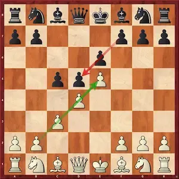

A Defesa Francesa é uma das defesas mais tradicionais do xadrez e começa com os movimentos 1. e4 e6 2. d4 d5. Ela recebeu esse nome porque foi muito utilizada por jogadores franceses no século XIX. A ideia principal das pretas é desafiar o controle das brancas sobre o centro, preparando o avanço do peão para d5. A Defesa Francesa geralmente cria uma posição sólida para as pretas, que procuram atacar o centro das brancas e, posteriormente, desenvolver um contra-ataque no lado da dama. As brancas costumam ganhar mais espaço no centro, enquanto as pretas buscam pressionar essa estrutura de peões. Essa característica faz com que a abertura possa levar a partidas bastante estratégicas e complexas. Existem várias linhas dentro da Defesa Francesa, como a Variante do Avanço, a Variante das Trocas, a Variante Tarrasch e a Variante Winawer. Por ser uma defesa sólida e oferecer boas possibilidades de contra-ataque, ela é muito utilizada tanto por jogadores iniciantes quanto por grandes mestres.